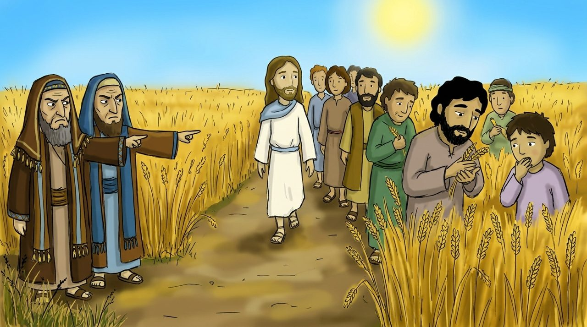
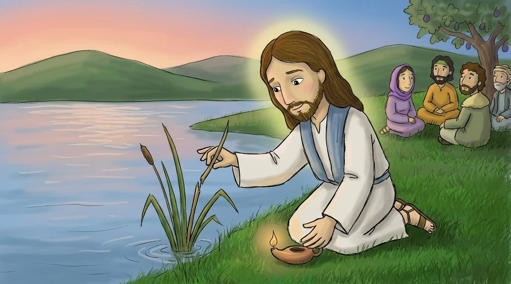
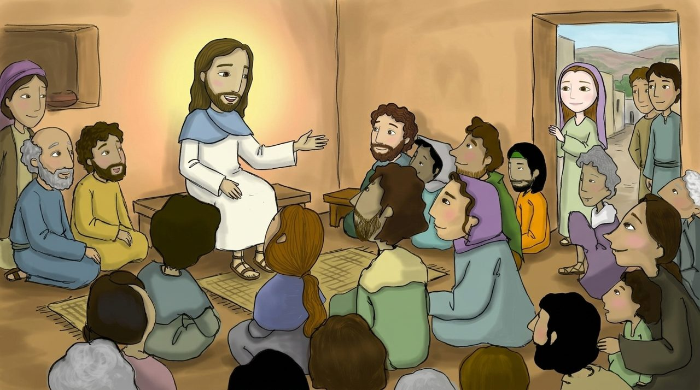

Нажми на жёлтые слова, чтобы узнать их значение. Кнопка 🔊 читает вслух.
Что мы узнаем сегодня?
Мы узнаем, что суббота — это прекрасный подарок для человека.
Мы узнаем, как Иисус исцелил человека с сухой рукой в субботу.
Мы узнаем, что те, кто исполняет волю Божью, — это семья Иисуса.

Сцена 1 · Матфей 12:1–8
Через засеянные поля
В одну Иисус и Его ученики проходили через засеянные поля. Проголодавшиеся ученики начали срывать колосья и есть.
Фарисеи возмутились: «В субботу работать нельзя!» Иисус ответил: «Бог хочет , а не . Я — Господин субботы».
Сцена 2 · Матфей 12:9–14
Человек с сухой рукой
В синагоге был человек с сухой, неподвижной рукой. Люди следили за Иисусом, чтобы увидеть, исцелит ли Он в субботу.
Иисус сказал: «Если ваша овца упадёт в яму в субботу, разве вы не вытащите её? А человек гораздо ценнее овцы». «Протяни руку!» И рука этого человека стала совершенно здоровой.

Сцена 3 · Матфей 12:15–21
Трости надломленной не переломит
Иисус не кричал громко и не спорил. Он тихо исцелял больных.
Библия говорит об Иисусе: « надломленной не переломит, и льна курящегося не угасит». Он с нежностью заботится о слабых людях.

Сцена 4 · Матфей 12:46–50
Моя семья
Матерь и братья Иисуса пришли повидаться с Ним. Иисус указал на Своих учеников и сказал:
«Кто исполняет Отца Моего Небесного, тот Мне брат, и сестра, и матерь». Если мы тоже исполняем волю Божью, мы — Иисуса.
Стих недели
«Кто исполняет волю Отца Моего Небесного, тот Мне брат, и сестра, и матерь».
Матфей 12:50 · простыми словами для детей
Кто исполняет Отца Моего Небесного, тот Мне , и , и матерь.
Выбери слова для пропусков по порядку.
Словарик
Нажми и узнай значение
Проверь себя
4 вопроса
Давай подумаем
Какое доброе дело мы можем принести Богу в день Господень?
Как мы можем помочь другу, который слаб, как «надломленная трость»?
Каково это — быть семьёй Иисуса?
Нарисуй
Нарисуй Божью семью вместе с Иисусом, и себя среди них.
Нарисуй на бумаге и отправь фото учителю
Что ты будешь делать в день Господень?
Помолимся вместе
Иисус, благодарю Тебя за то, что Ты дал субботу как подарок для отдыха, и за то, что в этот день Ты исцелил больного. Спасибо, что заботишься обо мне и не ломаешь меня, когда я бываю как надломленная трость. Помоги мне исполнять волю Божью и быть Твоей семьёй. Молюсь во имя Иисуса Христа. Аминь.